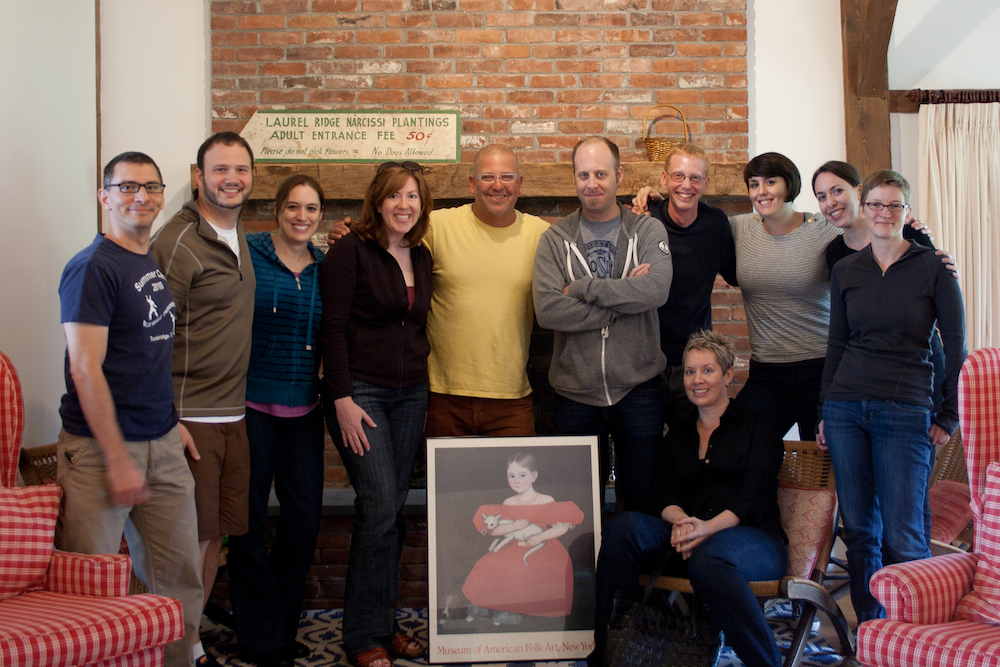

Choosing who to invite was the hardest part. We wanted everyone!
We started with a big list of all the content strategists we knew, or knew of. We wanted to be able to have conversations about running a business (marketing, business development, selling our services, etc) as well as the content strategy work itself, so we narrowed the list to people working as independent consultants (as opposed to people doing content strategy inside a large company or university). Then we broadened and added in folks who worked at small agencies, since they have client relationships similar to the consultant-types.
All of this was tempered by geography - it made sense to start with people within driving distance, and then expand out*. We sent out a first set of 6 invites, and then a few sets of 2 until we were all full. We expected that we’d need to send out 25+ invites to get 12 attendees. We sent out 14.
The responses were so positive - it turns out that people were really excited about a chance to get super content nerdy with friends. If you’re putting together your own retreat, trust that your people are out there, and they want to stay up late into the night talking about stuff their spouses find terribly boring.

*Ringers! There were a few people on our list who were decidedly Not Local. Like, not even on this continent. We sent out their invites in the first batch, figuring A) they wouldn’t be able to come, and B) they’d need max planning time if they could come. Amazingly, incredibly, wonderfully, they could come, and did. Don’t write off your longshots until you’ve asked. You never know who’s looking for an excuse to travel.